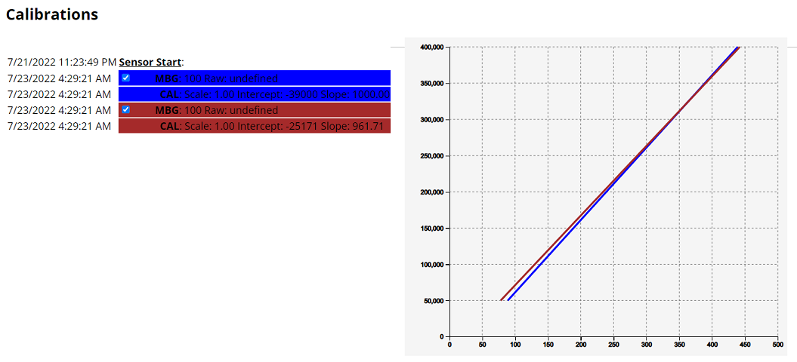

Create Reports
Nightscout offers some fantastic data-crunching report tools in the drawer menu,

An interesting video on how to use them with Gary Scheiner.
Select Reports to open the reports page.
{kind=link}
First select the report type you’d like to see (see below for an overview).
Day to day, Week to week, Daily Stats, Distribution, Hourly stats, Percentile Chart, Weekly Distribution, Calibrations, Treatments, Profiles or Loopalyzer
Then select the period for which you want your data analyzed.
Enable the check box and either select From: and To: dates or Today, Last 2 days, Last 3 days, Last week, Last 2 weeks, Last Month, Last 3 months.
{kind=link}
You can filter your data using key Notes or Event type (select one in the drop down list).
{kind=link}
You can select which week days to use in order to better analyze patterns.
{kind=link}
Confirm your Target BT range bottom and top for your TIR and graph range lines.
You can also sort the report from older to newer or newer first.
{kind=link}
Click SHOW and wait for data to load and rendering to complete. This might take some time if the period is long.

Day To day
This report will show your BG, day by day, including the treatments you select.

If you want to change selections, you need to click again SHOW to update the view.
{kind=link}
If you select Insulin distribution you will get a short report.
Note: You need Basal rate enabled to see bolus vs basal information.
{kind=link}
You can change the vertical scale to Logarithmic or Linear.
You can change the graph Size.
{kind=link}
Week to Week
This report will give you a week by week view, with color code for week days selected.
{kind=link}
Daily stats
This report will give you a daily distribution view.

Distribution
This report will give you a complete distribution view with a lot of information on the dates range you selected.
You also can filter by hours (scroll to the bottom of the page).
{kind=link}
{kind=link}
A1c is only a rough estimation that can be very inaccurate and does not replace actual blood testing. The formula used is taken from:Nathan, David M., et al. “Translating the A1C assay into estimated average glucose values.” Diabetes care 31.8 (2008): 1473-1478.
Time in fluctuation and Time in rapid fluctuation measure the % of time during the examined period, during which the blood glucose has been changing relatively fast or rapidly. Lower values are better.
Mean Total Daily Change is a sum of the absolute value of all glucose excursions for the examined period, divided by the number of days. Lower is better.
Mean Hourly Change is a sum of the absolute value of all glucose excursions for the examined period, divided by the number of hours in the period. Lower is better.
Out of Range RMS is calculated by squaring the distance out of range for all glucose readings for the examined period, summing them, dividing by the count and taking the square root. This metric is similar to in-range percentage but weights readings far out of range higher. Lower values are better.
GVI (Glycemic Variability Index) and PGS (Patient Glycemic Status) are measures developed by Dexcom, details can be found here.
Hourly stats
This report will give you an hourly distribution view with a box plot and additional hour by hour statistics.

Percentile Chart
This report will give you a percentile distribution view of the range you selected.

Weekly Distribution
This report will give you a weekly view of your statistics.

Calibrations
This will give you a table of your calibrations, if your uploader sends the correct event and data.
{kind=link}
Treatments
This will give you a table of your treatments, day by day.
{kind=link}
Profiles
This report will display profiles used in the time range.
{kind=link}
Loopalyzer
Loopalyzer is an utility made to help analyze and tune closed loop systems. It may work with other setups as well, both closed and open loop, and non loop.
Select the period on which you want to run the report then click Show. A set of graphs will display top to bottom your basal profile, blood glucose, loop deviation from basal (that should be minimized for an optimized closed loop system), insulin on board and carbs on board. On the last two graphs, treatments are represented by vertical black bars.
{kind=link}
Using the dedicated menu you can display your profiles below the graph and use Timeshift. Click Show to update the display when changing the options.
You can navigate day to day with < Previous day and Next day > or by period length with << Previous and Next >> (i.e. if you selected a week it will go backwards and forward week by week).
{kind=link}
Timeshift will allow you to synchronize meals within a time range in order to better analyze your data. Obviously the rest of the day will not make sense since the shift only highlights the time range you are analyzing now. For example below: dinner analysis.
{kind=link}
You might also be interested by AutoTune.
Warning
Make sure to temporarily disable authentication before running AutoTune.
Nightscout Reporter
https://nightrep.zreptil.de/ can be used to generate PDF documents with the data stored at Nightscout.
You need to add cors to your ENABLE variables
Facebook group Nightscout Reporter
Power BI
Facebook group Nightscout Power BI Reporting